СТРОИТЕЛЬНЫЕ НОРМЫ И ПРАВИЛА
РАСЧЕТ НА ПРОЧНОСТЬ
СТАЛЬНЫХ ТРУБОПРОВОДОВ
СНиП 2.04.12-86
ГОСУДАРСТВЕННЫЙ КОМИТЕТ СССР ПО ДЕЛАМ СТРОИТЕЛЬСТВА
Москва 1986
РАЗРАБОТАНЫ ВНИИСТ Миннефтегазстроя (канд. техн. наук В. В. Рождественский - руководитель темы, канд. техн. наук В. П. Черний).
ВНЕСЕНЫ Миннефтегазстроем.
ПОДГОТОВЛЕНЫ К УТВЕРЖДЕНИЮ Главтехнормированием Госстроя СССР (И. В. Сессин).
С введением в действие СНиП 2.04.12-86 "Расчет на прочность стальных трубопроводов" утрачивают силу "Указания по расчету стальных трубопроводов различного назначения" (СН 373-67).
При пользовании нормативным документом следует учитывать утвержденные изменения строительных норм и правил и государственных стандартов, публикуемые в журнале "Бюллетень строительной техники", "Сборнике изменений к строительным нормам и правилам" Госстроя СССР и информационном указателе "Государственные стандарты СССР" Госстандарта.
СОДЕРЖАНИЕ
|
1. |
||
|
2. |
||
|
3. |
Расчетные характеристики труб, соединительных деталей и сварных соединений |
|
|
4. |
||
|
5. |
||
|
Обязательное. Буквенные обозначения величин |
||
|
Рекомендуемое. Значения коэффициента надежности по материалу труб и соединительных деталей, изготовляемых по ряду государственных стандартов |
||
|
Рекомендуемое. Конструктивные решения соединительных деталей трубопроводов |
||
|
Обязательное. Определение пролетов надземных трубопроводов |
||
|
Государственный комитет СССР по делам строительства |
Строительные нормы и правила |
СНиП 2.04.12-86 |
|
Расчет на прочность |
Взамен |
Настоящие нормы распространяются на стальные трубопроводы (в дальнейшем - трубопроводы) различного назначения условным диаметром до 1400 мм включ., предназначенные для транспортирования жидких и газообразных сред давлением до 10 МПа (100 кгс/см2) и температурой от минус 70 до плюс 450 °С включ., и устанавливают требования к расчету их на прочность.
Настоящие нормы не распространяются на магистральные и промысловые газо и нефтепроводы, технологические и шахтные трубопроводы на трубопроводы, работающие под вакуумом и испытывающие динамические воздействия транспортируемой среды, трубопроводы особого назначения (атомных установок, передвижных агрегатов, гидро и пневмотранспорта и др.), а также на трубопроводы, для которых проектирование или расчет на прочность регламентируется "Правилами устройства и безопасной эксплуатации трубопроводов пара и горячей воды", утвержденными Госгортехнадзором СССР, и другими нормативными документами, утвержденными в установленном порядке.
1. ОБЩИЕ УКАЗАНИЯ
1.1. Для трубопроводов следует применять трубы и соединительные детали, отвечающие требованиям государственных стандартов и технических условий, утвержденных в установленном порядке, что должно быть подтверждено сопроводительным документом (паспортом или сертификатом). При отсутствии указанного документа соответствие труб и соединительных деталей требованиям государственных стандартов или технических условий должно быть подтверждено испытанием их образцов в объеме, определяемом нормативными документами на соответствующие трубопроводы.
1.2. Расчет трубопроводов на прочность производится по методу предельных состояний и включает определение толщин стенок труб, тройников, переходов, отводов и заглушек, определение допустимых пролетов трубопроводов, проведение поверочного расчета принятого конструктивного решения трубопровода.
1.3. Поверочный расчет трубопроводов следует производить на неблагоприятные сочетания нагрузок и воздействий для конкретно принятого конструктивного решения с оценкой прочности и устойчивости продольных и поперечных сечений рассматриваемого трубопровода.
1.4. Буквенные обозначения величин в формулах, приведенных в настоящих нормах указаны в обязательном приложении 1.
2. НАГРУЗКИ И ВОЗДЕЙСТВИЯ
2.1. Расчет трубопроводов на прочность следует выполнять с учетом нагрузок и воздействий, возникающих при их сооружении, испытании и эксплуатации.
Расчетные нагрузки, воздействия и их возможные сочетания необходимо принимать в соответствии с требованиями СНиП 2.01.07-85.
2.2.
Коэффициенты надежности по нагрузке 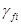
2.3. Нормативные нагрузки от собственного веса трубопровода, арматуры и обустройств изоляции, от веса и давления грунта необходимо принимать в соответствии с требованиями СНиП 2.01.07-85.
2.4. Нормативное значение воздействия от предварительного напряжения трубопровода (упругий изгиб по заданному профилю, предварительная растяжка компенсаторов при надземной прокладке и др.) надлежит определять по принятому конструктивному решению трубопровода.
2.5. Нормативное значение давления транспортируемой среды устанавливается проектом.
2.6. Нормативную нагрузку от веса транспортируемой среды на единицу длины трубопровода следует определять по формулам:
для жидкой среды
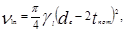
для газообразной среды
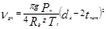
2.7. Нормативный температурный перепад в трубопроводе надлежит принимать равным разнице между максимально или минимально возможной температурой стенок трубопровода в процессе эксплуатации и наименьшей или наибольшей температурой, при которой фиксируется расчетная схема трубопровода.
2.8. Нормативную снеговую нагрузку на единицу длины горизонтальной проекции надземного трубопровода nsn надлежит определять по формуле
|
Внесены |
Утверждены |
Срок |
|
Нагрузки и воздействия |
Способ прокладки |
Коэффициент надежности |
|||
|
вид |
шифр i |
характеристика |
подземный |
надземный |
|
|
Постоянные |
1 |
Собственный вес трубопровода, арматуры и обустройств |
+ |
+ |
1,1 (0,95) |
|
2 |
Вес изоляции |
+ |
+ |
1,2 |
|
|
3 |
Вес и давление грунта (засыпки, насыпи) |
+ |
- |
1,2 (0,8) |
|
|
4 |
Предварительное напряжение трубопровода (упругий изгиб по заданному профилю, предварительная растяжка компенсаторов и др.) и гидростатическое давление воды |
+ |
+ |
1,0 |
|
|
Временные длительные |
Внутреннее давление транспортируемой среды: |
||||
|
5 |
газообразной |
+ |
+ |
1,1 |
|
|
6 |
жидкой |
+ |
+ |
1,15 |
|
|
Вес транспортируемой среды: |
|||||
|
7 |
газообразной |
+ |
+ |
1,1 (1,0) |
|
|
8 |
жидкой |
+ |
+ |
1,0 (0,95) |
|
|
9 |
Температурный перепад металла стенок трубопровода |
+ |
+ |
1,1 |
|
|
10 |
Неравномерные деформации грунта, не сопровождающиеся изменением его структуры (осадки, пучения и др.) |
+ |
+ |
1,5 |
|
|
Кратковременные |
11 |
Снеговая |
- |
+ |
1,4 |
|
12 |
Гололедная |
- |
+ |
1,3 |
|
|
13 |
Ветровая |
- |
+ |
1,2 |
|
|
13а |
Транспортирование отдельных секций, сооружение трубопровода, испытание и пропуск очистных устройств |
+ |
+ |
1,0 |
|
|
Особые |
14 |
Сейсмические воздействия |
+ |
+ |
1,0 |
|
15 |
Нарушение технологического процесса, временные неисправности или поломка оборудования |
+ |
+ |
1,0 |
|
|
16 |
Неравномерные деформации грунта, сопровождающиеся изменением его структуры (селевые потоки и оползни; деформации земной поверхности в районах горных выработок и карстовых районах; деформации просадочных грунтов при замачивании или вечномерзлых при оттаивании и др.) |
+ |
+ |
1,0 |
|
|
Примечания: 1. Знак "+" означает, что нагрузки и воздействия следует учитывать, знак "-" - не учитывать. 2. Значения коэффициентов надежности по нагрузке, указанные в скобках, должны приниматься в тех случаях, когда уменьшение нагрузки ухудшает условия работы трубопровода. 3. Когда по условиям испытания или эксплуатации в трубопроводах, транспортирующих газообразные среды, возможно полное или частичное заполнение внутренней полости их водой или конденсатом, а в трубопроводах, транспортирующих жидкие среды, - попадание воздуха или опорожнение их, необходимо учитывать изменение нагрузки от веса среды. |
|||||
Вес снегового покрова s следует принимать по СНиП 2.01.07-85.
2.9. Нормативную нагрузку от обледенения на единицу длины надземного трубопровода nin следует определять по формуле
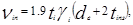
где ti- толщину слоя и gi - объемный вес гололеда необходимо принимать по СНиП 2.01.07-85.
2.10. Нормативную ветровую нагрузку на единицу длины надземного трубопровода wn действующую перпендикулярно его осевой вертикальной плоскости, следует определять по формуле
(5)
где статическую wstc и динамическую wdyn составляющие ветровой нагрузки следует определять по СНиП 2.01.07-85, при этом значение wdyn необходимо определять как для сооружения с равномерно распределенной массой и постоянной жесткостью.
2.11. Нормативные значения нагрузок и воздействий, возникающих при транспортировании отдельных секций, при сооружении трубопровода, испытании и пропуске очистных устройств, следует устанавливать проектом в зависимости от способов производства этих работ и проведения испытаний.
2.12. Сейсмические воздействия на надземные и подземные трубопроводы надлежит принимать согласно СНиП II-7-81.
2.13. Нагрузки и воздействия, вызываемые резким нарушением процесса эксплуатации, временной неисправностью и поломкой оборудования, следует устанавливать проектом в зависимости от особенностей технологического режима эксплуатации.
2.14. Нагрузки и воздействия от неравномерных деформаций грунта (осадок, пучения, селевых потоков, оползней, воздействий горных выработок, карстов, замачивания просадочных грунтов, оттаивания вечномерзлых грунтов и т. д.) надлежит определять на основании анализа грунтовых условий и их возможного изменения в процессе строительства и эксплуатации трубопроводов.
2.15. Нормативные нагрузки и коэффициенты надежности по нагрузке от подвижного состава железных и автомобильных дорог следует определять согласно СНиП 2.05.03-84.
3. РАСЧЕТНЫЕ ХАРАКТЕРИСТИКИ ТРУБ, СОЕДИНИТЕЛЬНЫХ ДЕТАЛЕЙ И СВАРНЫХ СОЕДИНЕНИЙ
3.1. Расчетные сопротивления материала труб и соединительных деталей по временному сопротивлению Ru пределу текучести Ry при расчетной температуре следует определять по формулам:
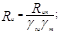
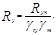
3.2. Нормативные сопротивления Run и Ryn следует принимать равными минимальным значениям соответственно временного сопротивления и предела текучести материала труб и соединительных деталей по государственным стандартам или техническим условиям на трубы и соединительные детали, определяемым при нормальной температуре (20 °С).
3.3. Значения коэффициента надежности по материалу gm труб и соединительных деталей надлежит принимать по табл. 2. Значения коэффициентов надежности по материалу труб и соединительных деталей, изготовляемых по ряду государственных стандартов, допускается принимать по рекомендуемому приложению 2.
|
Характеристика труб и соединительных деталей |
Коэффициент |
|
Сварные из малоперлитной и бейнитной стали контролируемой прокатки и термически упрочненные трубы, изготовленные двусторонней электродуговой сваркой под флюсом по сплошному технологическому шву, с минусовым допуском по толщине стенки не более 5 % и прошедшие 100 %-ный контроль на сплошность основного металла и сварных соединений неразрушающими методами |
1,025 |
|
Сварные из нормализованной, термически упрочненной стали и стали контролируемой прокатки, изготовленные двусторонней электродуговой сваркой под флюсом по сплошному технологическому шву и прошедшие 100 %-ный контроль сварных соединений неразрушающими методами |
1,05 |
|
Сварные из нормализованной и горячекатаной низколегированной или углеродистой стали, изготовленные двусторонней электродуговой сваркой и прошедшие 100 %-ный контроль сварных соединений неразрушающими методами; бесшовные холодно- и теплодеформированные |
1,10 |
|
Сварные из горячекатаной низколегированной или углеродистой стали, изготовленные двусторонней электродуговой сваркой или токами высокой частоты; штампованные и штампосварные соединительные детали; остальные бесшовные трубы и соединительные детали |
1,15 |
|
Примечания:1. Для труб, сваренных односторонней сваркой, коэффициент надежности по материалу gm следует умножать на 1.1. 2. Коэффициент надежности по материалу для соединительных деталей, изготовленных из труб без теплового передела последних, следует принимать равным соответствующим его значениям для труб, из которых эти детали изготовлены. 3. Допускается применять коэффициенты 1,025 вместо 1,05, 1,05 вместо 1,10 и 1,10 вместо 1,15 для труб, изготовленных двусторонней сваркой под флюсом или электросваркой токами высокой частоты, со стенкой толщиной не более 12 мм при использовании специальной технологии производства, позволяющей получать качество труб, соответствующее данному коэффициенту gm. |
|
3.4. Значения поправочных коэффициентов надежности по материалу труб и соединительных деталей gtu и gty при расчетной температуре эксплуатации трубопровода следует принимать по табл. 3.
|
Трубы и соединительные детали из сталей |
Поправочные коэффициенты надежности по материалу по временному сопротивлению gtu и по пределу текучести gty при температуре эксплуатации трубопровода °С |
||||||
|
минус 70 |
минус 40 -плюс 20 |
100 |
200 |
300 |
400 |
450 |
|
|
Углеродистых: |
|||||||
|
gtu |
- |
1,0 |
1,0 |
1,0 |
1,0 |
- |
- |
|
gty |
- |
1,0 |
1,05 |
1,15 |
1,40 |
- |
- |
|
Низколегированных: |
|||||||
|
gtu |
1,0 |
1,0 |
1,05 |
1,05 |
1,10 |
1,40 |
1,90 |
|
gty |
1,0 |
1,0 |
1,10 |
1,15 |
1,25 |
1,60 |
2,20 |
|
Легированных: |
|||||||
|
gtu |
1,0 |
1,0 |
1,05 |
1,15 |
1,25 |
1,35 |
1,45 |
|
gty |
1,0 |
1,0 |
1,05 |
1,15 |
1,25 |
1,35 |
1,45 |
|
Примечания: 1. Для промежуточных значений расчетных температур величины gtu и gty следует определять линейной интерполяцией двух ближайших значений, приведенных в табл. 3. 2. Знак "-" означает, что при таких температурах эксплуатации трубопровода углеродистые стали, как правило, не применяются. |
|||||||
3.5. Расчетные сопротивления сварных швов, соединяющих между собой трубы и соединительные детали, выполненных любым видом сварки и прошедших контроль качества неразрушающими методами, следует принимать равными меньшим значениям соответствующих расчетных сопротивлений соединяемых элементов.
При отсутствии этого контроля расчетные сопротивления сварных швов, соединяющих между собой трубы и соединительные детали, следует принимать с понижающим коэффициентом 0,85.
4. ОПРЕДЕЛЕНИЕ ТОЛЩИН СТЕНОК ТРУБ И СОЕДИНИТЕЛЬНЫХ ДЕТАЛЕЙ
4.1. Расчетные толщины стенок труб и соединительных деталей t следует определять:
при 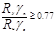
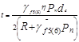
где
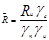
при 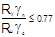
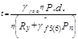
4.2. Трубопроводы с толщиной стенки, определенной согласно настоящим нормам, не допускается применять для транспортирования сред, оказывающих коррозионное воздействие на металл и сварные соединения труб, если в проекте не предусмотрены решения по защите их от коррозии (антикоррозионные покрытия, ингибиторы и пр.) .
Увеличение толщины стенки трубопроводов (соединительных деталей) с целью защиты их от коррозии, а также трубопроводов, находящихся в особых условиях строительства или эксплуатации (например, при прокладке трубопроводов в сейсмических районах или особенностях технологии сварки, производства строительно-монтажных работ или значительных температурных перепадах в трубопроводе и др.), допускается только при условии, если это увеличение предусмотрено соответствующими нормативными документами, утвержденными или согласованными Госстроем СССР.
4.3. Значения коэффициента надежности по назначению gn трубопровода следует принимать по табл. 4.
4.4. Значения коэффициента условий работы gc трубопровода необходимо принимать по табл. 5.
4.5. Коэффициент надежности gu для труб и соединительных деталей в расчетах по временному сопротивлению следует принимать равным 1,3.
4.6. Значения коэффициента несущей способности труб и соединительных деталей, конструктивные решения которых приведены в рекомендуемом приложении 3, надлежит принимать:
для труб, заглушек и переходов h = 1;
для тройниковых соединений и отводов - по формуле
h = ax + b (11)
где 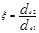
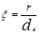
|
Транспортируемая среда и условный диаметр трубопровода |
Коэффициент надежности по значению gn трубопровода при нормативном давлении транспортируемой среды, МПа |
||
|
0 < рn < 2,5 |
2,5 < рn < 6,3 |
6,3 <рn < 10 |
|
|
Горючие газы, d £ 500 мм; трудногорючие и негорючие (инертные) газы, d£ 1000 мм; легковоспламеняющиеся и горючие жидкости, d£1000 мм; трудногорючие и негорючие жидкости, d£1200 мм |
1,0 |
1,0 |
1,0 |
|
Горючие газы, 500 <d£ 1000 мм; трудногорючие и негорючие (инертные) газы, d=1200 мм; легковоспламеняющиеся и горючие жидкости, d=1200 мм; трудно-горючие и негорючие жидкости, d=1400 мм |
1,0 |
1,0 |
1,05 |
|
Горючие газы, d= 1200 мм; трудногорючие и негорючие (инертные) газы, d=1400 мм; легковоспламеняющиеся и горючие жидкости, d= 1400 мм |
1,0 |
1,05 |
1,10 |
|
Горючие газы, d= 1400 мм |
1,05 |
1,10 |
1,15 |
|
Характеристика транспортируемой среды |
Коэффициент условий работы трубопровода gс |
|
Вредные (классов опасности 1 и 2), горючие газы, в том числе сжиженные |
0,55 |
|
Легковоспламеняющиеся и горючие жидкости; вредные (класса опасности 3) и трудногорючие и негорючие (инертные) газы |
0,70 |
|
Трудногорючие и негорючие жидкости |
0.85 |
|
Примечание. Класс опасности вредных веществ следует определять по ГОСТ 12.1.005-76 и ГОСТ 12.1.007-76. |
|
Значения коэффициентов а и b в формуле (11) следует принимать: для тройниковых соединений - по табл. 6; для отводов - по табл. 7.
4.7. Для подземных трубопроводов, имеющих отношение t/de < 0,015 или укладываемых на глубину более 3 м или менее 0,8 м, следует соблюдать условие
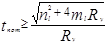
Значения nl и ml (расчетное усилие и изгибающий момент в продольном сечении трубы единичной длины) необходимо определять в соответствии с правилами строительной механики с учетом отпора грунта от совместного воздействия давления грунта, нагрузок над трубой от подвижного состава железнодорожного и автомобильного транспорта, возможного вакуума и гидростатического давления грунтовых вод.
|
|
Тройниковые соединения [см. формулу (11)] |
|||||
|
сварные без усиливающих элементов |
сварные усиленные накладками |
бесшовные и штампосварные |
||||
|
а |
b |
а |
b |
a |
b |
|
|
От 0,00 до 0,15 |
0,00 |
1,00 |
0,00 |
1,00 |
0,22 |
1,00 |
|
" 0,15 " 0,50 |
1,60 |
0,76 |
0,00 |
1,00 |
0,62 |
0,94 |
|
" 0.50 " 1,00 |
0,10 |
1,51 |
0,46 |
0,77 |
0,40 |
1,05 |
|
|
Отводы [см. формулу (11)] |
|
|
а |
b |
|
|
От 1,0 до 2,0 |
-0,3 |
1,6 |
|
Более 2,0 |
0,0 |
1,0 |
5. ПРОВЕРКА ПРОЧНОСТИ ТРУБОПРОВОДА
5.1. Поверочный расчет трубопровода производится после выбора его основных размеров с учетом всех расчетных нагрузок и воздействий для всех расчетных случаев.
5.2. Определение усилий от расчетных нагрузок и воздействий, возникающих в отдельных элементах трубопроводов, необходимо производить методами строительной механики расчета статически неопределимых стержневых систем.
5.3. Расчетная схема трубопровода должна отражать действительные условия его работы, а метод расчета - учитывать возможность использования ЭВМ.
5.4. В качестве расчетной схемы трубопровода следует рассматривать статически неопределимые плоские или пространственные, простые или разветвленные стержневые системы переменной жесткости с учетом взаимодействия трубопровода с опорными устройствами и окружающей средой (при укладке непосредственно в грунт). При этом коэффициенты повышения гибкости отводов и тройниковых соединений определяются согласно п.п. 5.5 и 5.6.
5.5. Значение коэффициента повышения гибкости гнутых и сварных отводов кр надлежит определять по табл. 8.
Величина кр* принимается по черт. 1 в зависимости от геометрического параметра отвода lb и параметра внутреннего давления wb.
Значения параметров lb и wb следует определять по формулам:
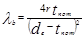
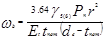
|
Центральный угол отводи j, град |
Коэффициент повышения гибкости отвода кр |
|
От 0 до 45 |
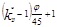 |
|
" 45 " 90 |
кр* |
5.6. Коэффициент гибкости тройниковых соединений необходимо принимать равным единице.
5.7. Арматуру, расположенную на трубопроводе (краны, задвижки, обратные клапаны и т.д.), следует рассматривать в расчетной схеме как твердое недеформируемое тело.
5.8. В каждом поперечном сечении трубопровода необходимо соблюдать условия:
при эксплуатации:
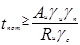
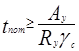
при сооружении, испытании, пропуске очистных устройств, хранении и транспортировании труб (секций), сейсмических воздействиях, особых режимах эксплуатации, вызываемых резкими нарушениями технологического режима, временной неисправностью или поломкой оборудования,
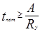
При несоблюдении условий (15) - (17) необходимо изменить конструктивную схему трубопровода, технологический режим транспортируемого продукта или способ производства работ, а в исключительных случаях, приведенных в п. 4.2, допускается увеличить толщину стенки трубопровода.
Номинальную толщину стенки труб и соединительных деталей tnom надлежит принимать ближайшей большей по сравнению с расчетной по ГОСТу или ТУ на трубы, которые допускается применять для строительства соответствующих трубопроводов.
Значения коэффициентов нагруженности поперечных сечений трубопровода Аu, Аy и А следует определять согласно п.п. 5.9 и 5.10.
5.9. Значения коэффициентов Аu и Аy следует определять по формулам:
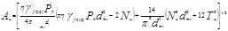
где dmt = de - tnom;
Nu, Tu соответственно расчетные продольное усилие и крутящий момент в рассматриваемом сечении трубопровода от совместного действия веса трубопровода, изоляции, арматуры и обустройств, расположенных на трубопроводе, веса и внутреннего давления транспортируемой среды, снеговой, ветровой и гололедных нагрузок;
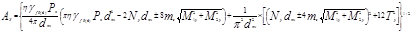
где Ny, M1y, M2y, Ty - соответственно расчетные продольное усилие, изгибающие моменты в двух взаимно перпендикулярных плоскостях, крутящий момент в рассматриваемом поперечном сечении трубопровода от совместного действия веса трубопровода, изоляции, арматуры и обустройств, расположенных на трубопроводе, воздействия предварительного напряжения трубопровода (в том числе упругого изгиба по заданному профилю) , веса, внутреннего давления и температурного воздействия транспортируемой среды, воздействия неравномерных деформаций грунта, снеговой, ветровой и гололедных нагрузок.
Коэффициент интенсификации напряжений ms следует определять согласно п. 5.11.
5.10. Коэффициент А для стадий сооружения, хранения и транспортирования необходимо вычислять по формуле
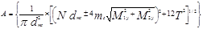
где N, М1, M2, T - соответственно расчетные продольное усилие, изгибающие моменты в двух взаимно перпендикулярных плоскостях, крутящий момент в рассматриваемом поперечном сечении трубопровода от действия нагрузок, возникающих при принятом в проекте способе производства работ и транспортирования труб (секций).
Значение коэффициента А для стадий испытания и пропуска очистных устройств, при воздействиях, вызываемых резкими нарушениями технологического режима, временной неисправностью или поломкой оборудования, следует определять по формуле (19), в которой нормативные значения давления транспортируемой среды и температурного воздействия должны приниматься согласно принятой в проекте схеме испытания или режиму эксплуатации.
Значение коэффициента А для оценки прочности при сейсмических воздействиях следует вычислять по формуле (19), в которой при определении расчетных усилий и моментов к перечисленным нагрузкам и воздействиям добавляются сейсмические воздействия.
5.11. Значения коэффициентов интенсификации напряжений следует принимать:
для прямой трубы ms= 1;
Значение ms* принимается по черт. 2 в зависимости от параметров lb и wb, определяемых формулами (13) и (14);
для тройникового соединения:
магистральной части
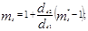
ответвления ms = ms*
Значения ms* принимаются по черт. 2 в зависимости от параметров тройникового соединения, определяемых по формулам:
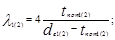
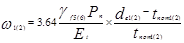
Примечание. При определении значений параметров магистральной части тройникового соединения l1 и w1 используются первые индексы, ответвления тройникового соединения l2 и w2 - вторые индексы.
5.12. Определение пролетов надземных трубопроводов, укладываемых на опоры с самокомпенсацией температурных удлинений или с линзовыми компенсаторами, допускается производить согласно обязательному приложению 4.
ПРИЛОЖЕНИЕ 1
Обязательное
БУКВЕННЫЕ ОБОЗНАЧЕНИЯ ВЕЛИЧИН
|
А, Аu, Аy - |
коэффициенты нагруженности поперечного сечения трубопровода; |
|
Еt - |
модуль упругости материала трубопровода при температуре эксплуатации; |
|
М1, М2, -М1y,M2y - |
расчетные изгибающие моменты в двух взаимно перпендикулярных плоскостях в рассматриваемом поперечном сечении трубопровода; |
|
N, Nu, Ny - |
расчетные продольные усилия в рассматриваемом сечении трубопровода; |
|
Rg - |
газовая постоянная; |
|
Run, Ryn - |
нормативные сопротивления материала труб и соединительных деталей соответственно по временному сопротивлению и пределу текучести; |
|
Ru, Ry - |
расчетные сопротивления материала труб и соединительных деталей соответственно по временному сопротивлению и пределу текучести; |
|
Т, Тu, Тy - |
расчетные крутящие моменты в рассматриваемом поперечном сечении трубопровода; |
|
Тt - |
температура транспортируемой газообразной среды, К; |
|
bmai, blat - |
ширина накладок соответственно магистральной части и ответвления тройникового соединения; |
|
d - |
условный диаметр трубопровода; |
|
de - |
наружный диаметр труб и соединительных деталей; |
|
de1, de2 - |
наружный диаметр соответственно магистральной части и ответвления тройникового соединения; |
|
dmt - |
средний диаметр труб и соединительных деталей; |
|
g - |
ускорение силы тяжести; |
|
gdwn - |
нормативная нагрузка от веса единицы длины трубопровода; |
|
ginsn - |
нормативная нагрузка от веса изоляционного покрытия единицы длины трубопровода |
|
h - |
высота эллиптической части заглушки; |
|
kp - |
коэффициент повышения гибкости гнутых и сварных отводов; |
|
l, lbf - |
средние пролеты надземного трубопровода, определяемые соответственно из условий прочности и прогиба; |
|
ltst - |
расстояние между опорами надземного трубопровода из условия его гидравлического испытания; |
|
ml, nl - |
расчетные изгибающий момент и усилие на единицу длины продольного сечения трубопровода; |
|
ms - |
коэффициент интенсификации напряжений; |
|
pn - |
рабочее (нормативное) давление транспортируемой среды; |
|
рtst - |
испытательное давление; |
|
q - |
расчетная нагрузка на единицу длины надземного трубопровода; |
|
qtst - |
нагрузка на единицу длины трубопровода при его испытании; |
|
r - |
радиус кривизны отвода; |
|
rtee - |
радиус закругления тройника; |
|
t - |
расчетная толщина стенки труб и соединительных деталей; |
|
tnom - |
номинальная толщина стенки труби соединительных деталей; |
|
tins - |
толщина изоляционного покрытия трубопровода; |
|
nl(g)n - |
нормативная нагрузка от веса транспортируемой среды; |
|
ns(i)n - |
нормативная снеговая или гололедная нагрузка; |
|
nwn - |
нормативная нагрузка от веса воды в единице длины трубопровода; |
|
wn - |
нормативная ветровая нагрузка на единицу длины надземного трубопровода; |
|
z - |
коэффициент сжимаемости газа; |
|
а - |
угол наклона перехода; |
|
gc - |
коэффициент условий работы трубопровода; |
|
gfi - |
коэффициент надежности по нагрузке; |
|
gg, gl - |
объемный вес соответственно газообразной и жидкой среды; |
|
gm - |
коэффициент надежности по материалу труб и соединительных деталей при нормальной температуре; |
|
gn - |
коэффициент надежности по назначению трубопровода; |
|
gtu - |
поправочный коэффициент надежности по материалу труб и соединительных деталей при расчетной температуре эксплуатации в расчетах по временному сопротивлению; |
|
gty - |
поправочный коэффициент надежности по материалу труб и соединительных деталей при расчетной температуре эксплуатации в расчетах по пределу текучести; |
|
gu - |
коэффициент надежности для труб и соединительных деталей в расчетах по временному сопротивлению; |
|
h - |
коэффициент несущей способности труб и соединительных деталей; |
|
l1, l2, l3 - |
геометрический параметр соответственно отвода, магистральной части и ответвления тройникового соединения; |
|
j - |
центральный угол отвода; |
|
y - |
коэффициент уклона трубопровода; |
|
w1, w2, wb - |
параметр внутреннего давления соответственно отвода, магистральной части и ответвления тройникового соединения. |
ПРИЛОЖЕНИЕ 2
Рекомендуемое
ЗНАЧЕНИЯ КОЭФФИЦИЕНТА НАДЕЖНОСТИ ПО МАТЕРИАЛУ ТРУБ И СОЕДИНИТЕЛЬНЫХ ДЕТАЛЕЙ, ИЗГОТОВЛЯЕМЫХ ПО РЯДУ ГОСУДАРСТВЕННЫХ СТАНДАРТОВ
|
Государственный стандарт, характеристика труб |
Коэффициент надежности по материалу gm |
Государственный стандарт, характеристика труб |
Коэффициент надежности по материалу gm |
|
|
ГОСТ 20295-85 при de³ 530 мм |
1,05 |
ГОСТ 8731-74, группы А, В, Г; ГОСТ 9940-81; ГОСТ 9941-81 ГОСТ 550-75, горячедеформиро-ванные группы А, группы Б с допусками по толщине по ГОСТ 8732-78; ГОСТ 8696-74, группа В при tnom < 8 мм; ГОСТ 10705-80, группы А и В при tnom<8мм*; ГОСТ 10706-76, группы А и В при tnom < 8 мм; |
1,15 |
|
|
ГОСТ 550-75, холодно- и теплодеформированные- и группы А, группы Б с допусками по толщине по ГОСТ 8734-75; |
1,10 |
|||
|
ГОСТ 8733-74, группы В, Г и Е; |
||||
|
ГОСТ 9941-81 при tnom> 7 мм; |
||||
|
ГОСТ 8696-74, группа В при tnom³ 8 ММ; |
||||
|
ГОСТ 10705-80, группы А и В при tnom³8 мм*; |
||||
|
ГОСТ 20295-85, при de< 530 мм; |
||||
____________
* Для термически обработанных труб диаметром до 159 мм включ. коэффициент надежности по материалу следует умножать на 1,1.
ПРИЛОЖЕНИЕ 3
Рекомендуемое
КОНСТРУКТИВНЫЕ РЕШЕНИЯ СОЕДИНИТЕЛЬНЫХ ДЕТАЛЕЙ ТРУБОПРОВОДОВ
Значения коэффициентов несущей способности, определяемые согласно п. 4.6, следует учитывать в расчетах для следующих решений соединительных деталей.
1. Равнопроходные и переходные тройниковые соединения (тройники):
бесшовные, получаемые выдавливанием или экструзией ответвления в горячем состоянии, и штампосварные, получаемые сваркой по образующим двух несимметричных частей, одна из которых имеет цельноштампованное ответвление (черт. 1, а). Радиус rtee должен быть не менее толщины стенки тройника;
сварные, получаемые путем врезки одной трубы (или трубной обечайки) в другую под прямым углом (черт. 1, б), и тройники сварные, усиленные накладками (черт. 1, в), которые целесообразно применять при d ³ 300 мм. При этом для тройников с отношением диаметров ответвления к магистрали de2/de1< 0,2 накладки не ставятся, а при de2/de1< 0,5 накладка ставится только на магистрали. Ширина накладок (черт. 1, в) должна быть на магистральной части тройника bmai= 0,4de1, на ответвлении - blat= 0,3dez. Толщина накладок должна быть равна толщине стенки магистральной части тройника.
Черт. 1. Тройники
а - бесшовный и штампосварной; б - сварной без усиливающих элементов; в - сварной, усиленный накладками; 1-магистральная часть тройника; 2 -ответвление; 3 - накладка
2.
Концентрические штампованные и штампосварные переходы, получаемые путем горячей
штамповки (осадки) из цилиндрической заготовки или штамповки и сварки двух
симметричных заготовок (черт. 2). Величина угла  должна быть не более 15°.
должна быть не более 15°.
Черт. 2. Концентрический переход
3. Заглушки (днища) эллиптические (черт. 3), получаемые горячей штамповкой и имеющие высоту эллиптической части h не менее 0,2 диаметра заглушки.
Черт. 3. Заглушке эллиптическая
4. Отводы:
бесшовные, получаемые путем горячей протяжки трубных заготовок, и отводы штампосварные, получаемые сваркой из двух горячештампованных симметричных заготовок (черт. 4, а);
сварные, которые должны иметь не менее трех секторов и двух полусекторов (черт. 4, б). Отводы изготовляются с обязательной подваркой корня шва изнутри. Длина секторов по внутренней образующей должна быть не менее 0,15de.
Черт. 4. Отводы
a - бесшовный и штампосварной; б - сварной
ПРИЛОЖЕНИЕ 4
Обязательное
1. Значения пролетов надземных трубопроводов, определяемые настоящим приложением, следует принимать для трубопроводов, укладываемых на опоры с самокомпенсацией температурных удлинении (например, путем установки П-образных или W-образных компенсаторов) , и для трубопроводов с линзовыми компенсаторами.
2. При определении пролетов трубопроводов различаются средние и крайние пролеты (см. чертеж).
Схема прокладки трубопровода на опорах
1 - средние пролеты; 2 - крайние пропеты; 3 - компенсирующие устройства
3. Средний пролет трубопровода l при отсутствии резонансных колебаний трубопровода следует определять по формуле
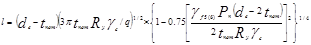
Для трубопроводов, подлежащих гидравлическому испытанию, расстояние между опорами трубопровода во время испытания ltst должно быть не больше величины
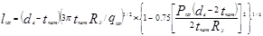
Для газопроводов, в которых возможно образование конденсата при их отключении, средний пролет газопровода lbf не должен превышать величины
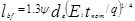
4. Значения величин расчетных нагрузок на единицу длины трубопровода q и qtst необходимо определять по формулам:
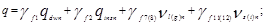
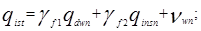
Нормативные нагрузки в формулах (4) и (5) следует принимать:
от веса единицы длины трубопровода qdwn и от веса единицы длины изоляционного покрытия трубопровода qinsn - по СНиП 2.01.07-85;
от веса транспортируемой среды nl(g)n жидкости - по формуле (1), для газа - по формуле (2) настоящих норм;
от снега или гололеда ns(i)n - по формулам (3) или (4) настоящих норм, при этом принимается нагрузка, для которой величина произведения gf11nsn или gf12nin больше;
от веса воды в единице длины трубопровода nwn - по формуле (1) настоящих норм.
5. Значения коэффициента уклона трубопровода Y следует принимать по таблице.
6. При скоростях ветра, когда частота срыва вихрей совпадает с собственной частотой изгибных колебаний трубопровода, необходимо производить поверочный расчет трубопровода на вихревое возбуждение в направлении, перпендикулярном ветровому потоку, согласно СНиП 2.01.07-85.
|
Уклон трубопровода |
Коэффициент |
|||||
|
100 |
300 |
500 |
700 |
1000 |
1400 |
|
|
0,000 |
1,00 |
1,00 |
1,00 |
1,00 |
1,00 |
1,00 |
|
0,001 |
1,33 |
1,26 |
1,23 |
1,21 |
1,19 |
1,16 |
|
0,002 |
1,54 |
1,44 |
1,39 |
1,37 |
1,34 |
1,30 |
|
0,003 |
1,72 |
1,58 |
1,53 |
1,50 |
1,46 |
1,40 |
|
0,004 |
1,86 |
1,72 |
1,66 |
1,62 |
1,56 |
1,48 |